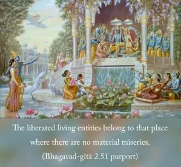
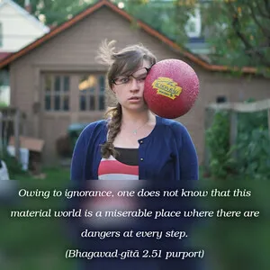
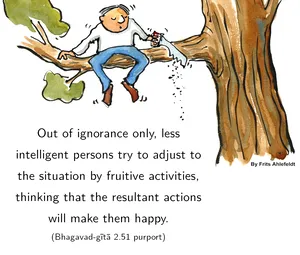

By thus engaging in devotional service to the Lord, great sages or devotees free themselves from the results of work in the material world. In this way they become free from the cycle of birth and death and attain the state beyond all miseries [by going back to Godhead].



The liberated living entities belong to that place where there are no material miseries. The Bhāgavatam (10.14.58) says:
samāṣritā ye pada-pallava-plavaṁ
mahat-padaṁ puṇya-yaśo murāreḥ
bhavāmbudhir vatsa-padaṁ paraṁ padaṁ
padaṁ padaṁ yad vipadāṁ na teṣām
“For one who has accepted the boat of the lotus feet of the Lord, who is the shelter of the cosmic manifestation and is famous as Mukunda, or the giver of mukti, the ocean of the material world is like the water contained in a calf’s footprint. Paraṁ padam, or the place where there are no material miseries, or Vaikuṇṭha, is his goal, not the place where there is danger in every step of life.”
Owing to ignorance, one does not know that this material world is a miserable place where there are dangers at every step. Out of ignorance only, less intelligent persons try to adjust to the situation by fruitive activities, thinking that the resultant actions will make them happy. They do not know that no kind of material body anywhere within the universe can give life without miseries. The miseries of life, namely birth, death, old age and diseases, are present everywhere within the material world. But one who understands his real constitutional position as the eternal servitor of the Lord, and thus knows the position of the Personality of Godhead, engages himself in the transcendental loving service of the Lord. Consequently he becomes qualified to enter into the Vaikuṇṭha planets, where there is neither material, miserable life nor the influence of time and death. To know one’s constitutional position means to know also the sublime position of the Lord. One who wrongly thinks that the living entity’s position and the Lord’s position are on the same level is to be understood to be in darkness and therefore unable to engage himself in the devotional service of the Lord. He becomes a lord himself and thus paves the way for the repetition of birth and death. But one who, understanding that his position is to serve, transfers himself to the service of the Lord, at once becomes eligible for Vaikuṇṭha-loka. Service for the cause of the Lord is called karma-yoga or buddhi-yoga, or in plain words, devotional service to the Lord.